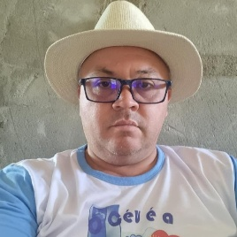

Uma breve visão sobre nossa congregação:
Num determinado período, nossa igreja enfrentou desafios significativos. Superamos diversas tribulações, contando sempre com a orientação divina. Seja por meio de sonhos ou do discernimento, atravessamos tempestades e saímos vitoriosos, pois Deus esteve conosco, uma garantia constante.
No presente, estamos em um processo de reestruturação, edificando o primeiro de muitos templos dedicados ao louvor ao Senhor. Não cessaremos até a volta de Cristo e a concretização da vontade divina em nosso ministério.
Objetivos:
Como congregação, nossa principal meta é resgatar almas. Ninguém deseja estar ausente no grandioso dia do arrebatamento, e por isso, almejamos ser instrumentos nas mãos de Deus para atrair muitas pessoas a Jesus. Pois, verdadeiramente, não há alegria maior do que encontrar a salvação e a paz genuína em Cristo Jesus.
Remanescentes
"Remanescentes" é o grupo de jovens da Igreja Iader Pedregal, que desempenhou um papel significativo na construção do templo e na adoração ao Senhor, colaborando de diversas maneiras com a igreja. Este conjunto é caracterizado pela proatividade dos jovens, que se envolvem na limpeza da igreja, participam dos cultos e compartilham refeições na residência do pastor.
Princípios Doutrinários:
Nossa igreja preconiza uma doutrina integralmente embasada na Bíblia, sem concessões ao liberalismo, embora não sejamos uma comunidade radical. Reforçamos a importância de aprimorar nossa fé, certos de que isso nos garantirá a presença do Senhor no dia do arrebatamento. Aquele que crê, verdadeiramente obedece, e assim, não apenas cremos, mas também buscamos obedecer a todos os ensinamentos bíblicos. Mesmo o diabo, a seu modo, crê no Senhor, mas sua crença não resulta em salvação.
Diante das dificuldades e do chamado à obediência, não nos desencorajamos. No Senhor, encontramos paz e descanso, seguindo o convite de Jesus: "Venham a mim todos os cansados e oprimidos, e eu os aliviarei". Embora renunciemos, todo fardo se torna leve na presença do Senhor.

Pt.Izael
Izael Muniz Lopes, marido, pai e visionário pastoral da Igreja "Iader Pedregal", destaca-se como um instrumento singular nas mãos divinas, conduzindo a comunidade com integridade, iniciativa e um carisma que verdadeiramente conquistou a todos. O esforço conjunto da congregação para se realocar e erigir um novo templo reflete a sinergia que permeia os valores compartilhados.
Neste contexto, o pastor Izael emerge como uma figura indispensável, guiando-os com sabedoria, qual pastor zeloso orientando seu rebanho. Seu papel vai além da liderança espiritual; ele se torna a âncora que estabiliza o barco da comunidade em meio às tempestades da mudança.
A colaboração ativa e a orientação sábia do pastor moldaram não apenas um edifício físico, mas uma comunidade coesa, unida por laços espirituais e compromissos compartilhados. Portanto, é com profunda gratidão que registramos aqui um caloroso "Muito obrigado, Pastor Izael", reconhecendo não apenas suas ações pragmáticas, mas também a influência positiva que permeia cada aspecto da vida da igreja.